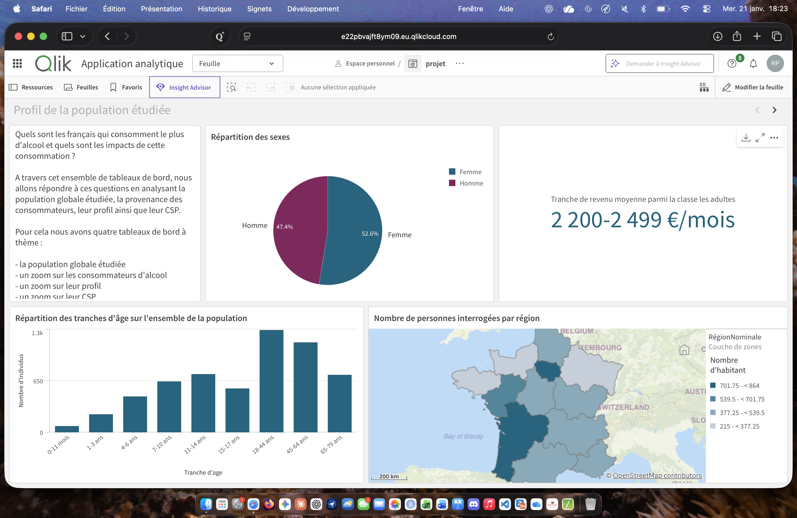

L'objectif de ce projet était de créer un tableau de bord interactif à l'aide de QlikSense, permettant de visualiser et d'analyser des données complexes de manière intuitive. Nous avons travaillé en binôme pour concevoir des graphiques et des indicateurs pertinents, sur le thème de l'influance de l'alcool dans les habitudes de vie des français.
Nous avons dû mettre au point les script de chargement des données. Nous avons ensuite conçu le tableau de bord en sélectionnant les visualisations les plus adaptées pour représenter les données de manière claire et engageante. La collaboration a été essentielle pour échanger des idées et affiner notre travail tout au long du projet.
L'une des principales difficultés a été de s'assurer que les données étaient correctement intégrées et que les visualisations étaient à la fois informatives et esthétiques. Nous avons également dû apprendre à utiliser certaines fonctionnalités avancées de QlikSense, ce qui a nécessité un temps d'adaptation. Cependant, grâce à une bonne communication et à une répartition efficace des tâches, nous avons pu surmonter ces défis.
Ce projet m'a permis de développer mes compétences en visualisation de données avec QlikSense, ainsi que mes capacités de travail en équipe. J'ai appris à concevoir des tableaux de bord interactifs qui facilitent l'analyse des données, et j'ai renforcé ma compréhension des meilleures pratiques en matière de design de visualisations.